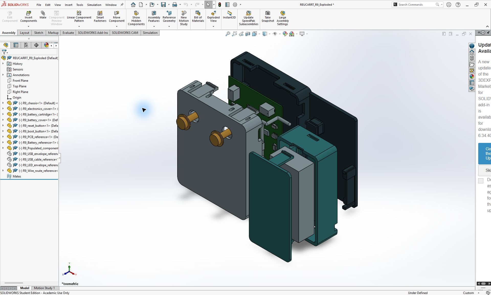
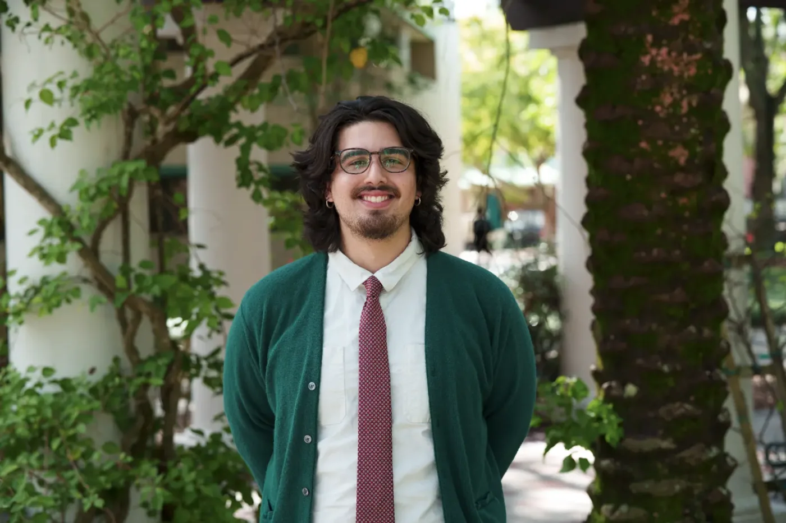
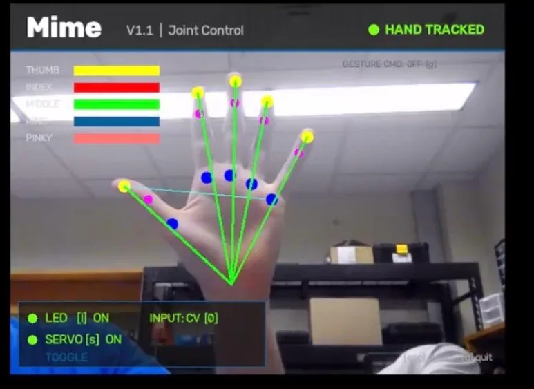

Research / SolidWorks
CARRT sensor ↗

R9 enclosure for motion research.

Mechanical Engineering Student
University of South Florida · Tampa, Florida

R9 enclosure for motion research.
IEEE USF / Robotics

Lower-limb assistance: mechanics, sensing, and controls.
Explore EXO research ↗Engineering / CAD prototype
Two axes, an orthogonal servo carrier, and a compliant grip.
Next steps: print, check hardware fit, and test PID control.
